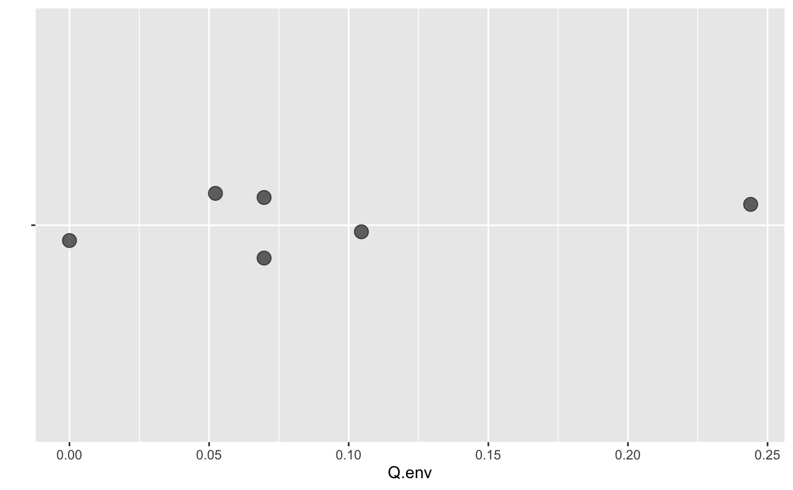

These data were collected by engineering students at Calvin College. The apparatus consists of concentric pipes insulated from the environment so that as nearly as can be managed the only heat exchange is between the hot and cold water.
data(HeatX)A data frame with 6 observations on the following variables.
trialtrial number
T.cold.intemperature (C) of the cold water as it enters the apparatus
T.cold.outtemperature (C) of the cold water as it leaves the apparatus
m.coldflow rate (L/min) of the cold water
T.hot.intemperature (C) of the hot water as it enters the apparatus
T.hot.outtemperature (C) of the hot water as it leaves the apparatus
m.hotflow rate (L/min) of the hot water
# We can test for heat exchange with the environment by checking to see if the
# heat gained by the cold water matches the heat lost by the hot water.
C_p <- 4.182 / 60 # / 60 because measuring m in L/min
HeatX2 <-
dplyr::mutate(HeatX,
Q.cold = m.cold * C_p * (T.cold.out - T.cold.in),
Q.hot = m.hot * C_p * (T.hot.out- T.hot.in),
Q.env = Q.cold + Q.hot
)
if (require(ggformula)) {
gf_jitter( "" ~ Q.env, data = HeatX2, alpha = 0.6, size = 4,
width = 0, height = 0.1, seed = 123) |>
gf_labs(y = "")
}

if (require(mosaic)) {
t.test( ~Q.env, data = HeatX2 )
}
#>
#> One Sample t-test
#>
#> data: Q.env
#> t = 2.6641, df = 5, p-value = 0.04466
#> alternative hypothesis: true mean is not equal to 0
#> 95 percent confidence interval:
#> 0.003160671 0.176897663
#> sample estimates:
#> mean of x
#> 0.09002917
#>